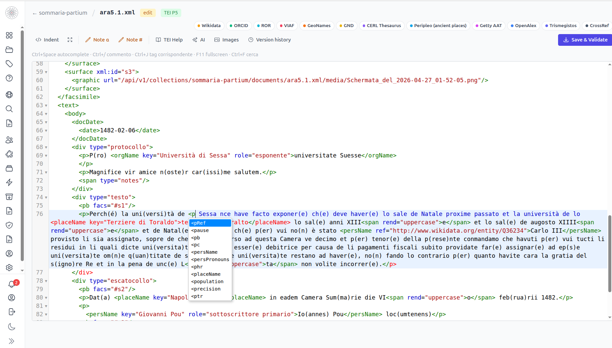
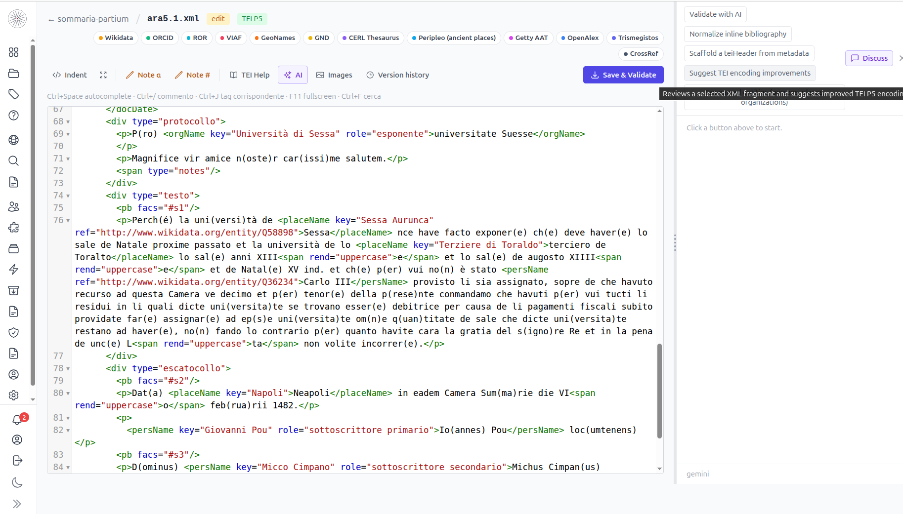
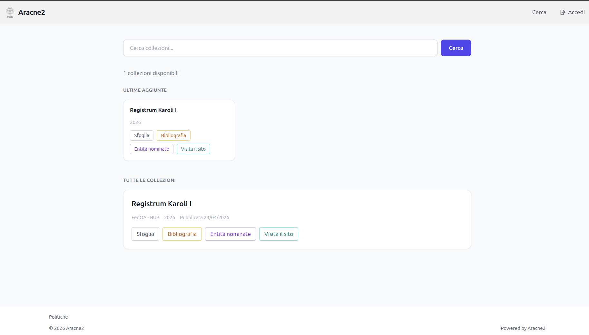
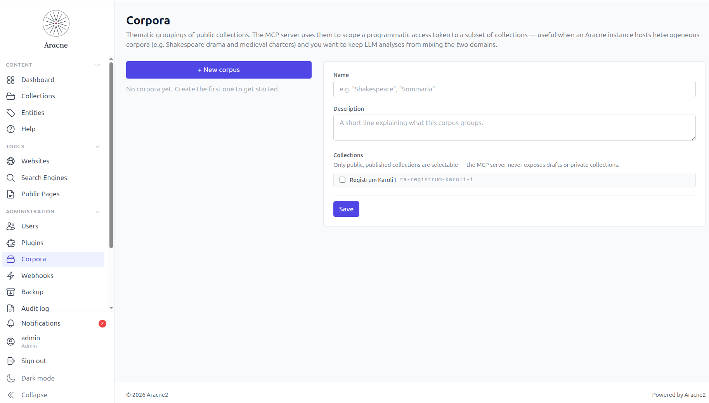
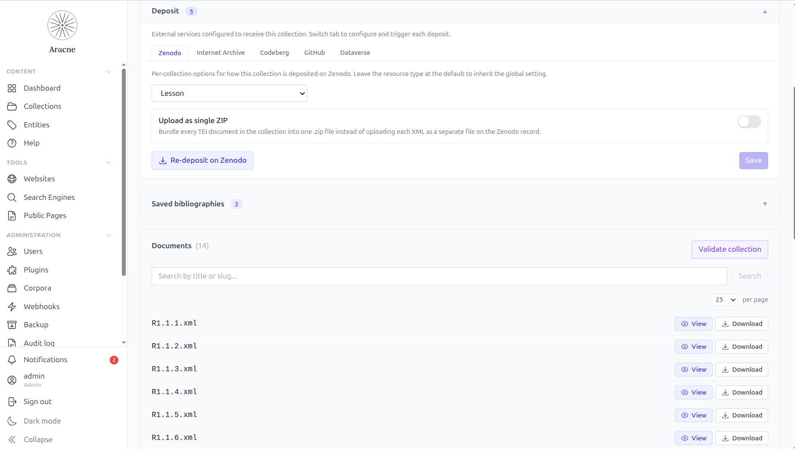
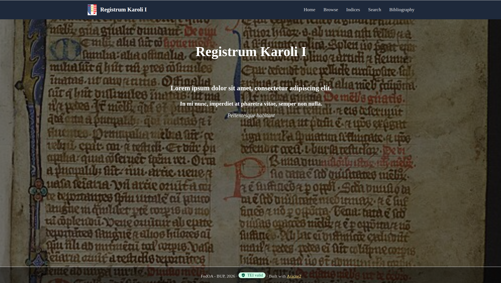

Aracne2
A modular, production-ready CMS for editing and publishing structured TEI corpora. Built for philologists, historians, archivists and scholarly editors who want to take a corpus from raw text to a published, citable digital edition — without also becoming sysadmins.
Open source · MIT licensed · Self-hosted
Production-ready · v1.0.1 · May 2026<p>
<persName ref="…/wiki/Q203829">Karolus</persName>
dei gratia Rex Sicilie Ducatus
Apulie et Principatus Capue,
alme Urbis Senator…
</p>Three things the platform actually does — in plain verbs: edit a TEI corpus, publish it, and connect it to the rest of the scholarly web.
01 · Edit
Load your TEI schema, attach it to the collection, then walk through your documents tag by tag and attribute by attribute. The app only proposes what the schema allows — you pick the markup that fits.
Type < to pick a valid
element, space to pick a valid attribute, =
to pick a valid value. The schema decides what's allowed; the
editor learns the schema by using it. Jump-to-matching-tag,
fold-all, format, and Ctrl+Space are always there.
Resolve people against Wikidata,
ORCID, VIAF, GND,
CERL, Trismegistos; places against
GeoNames and Peripleo; institutions
against ROR; terms against Getty AAT;
bibliography against CrossRef and OpenAlex.
Each lookup writes a canonical URI as @ref
— no free text ever lands in the XML.
Insert numeric or alphabetic notes at the cursor. Attach facsimile images and align them to text regions with the zone editor. Validate against the collection's schema automatically on every save — or open the validator panel to inspect the report.
Ask the AI to suggest tagging for a passage, propose corrections, or clean up bibliographic entries before the Bibliobuilder saves them. It works grounded in the corpus's own schema and the documents already in the collection — not generic guesses. Every accepted suggestion is audit-logged.
Every editorially meaningful event — create, submit, request
revisions, publish — lands as an append-only row in the
document's history, alongside explicit
Save version and Roll back to vN entries.
A working / published split lets editors keep
iterating on a published collection without taking the public site
offline; ?version=N
permalinks resolve only to publication-origin rows, so manual saves
never leak to anonymous visitors.
02 · Publish
Once a collection is published, Aracne2 gives you several public surfaces to choose from — or to combine. Pick the ones that fit the project, ignore the rest.
Every project gets a public landing — collections index,
customisable hero, browse-by-author/place/date, configurable nav.
Plugins (deposits, search portals, custom pages) land their own
public links via the public_navigation
capability, no template editing.
Each published document renders through XSLT, with one-click download of the original TEI source and a print-to-PDF option. Re-render externally if you want; the source is always available.
Generate a separate site for a single edition with its own XSLT
theme, its own domain, its own templates — while the corpus
stays inside Aracne2. Each site ships its own
sitemap.xml and
robots.txt.
Pick the collections you want, click Build, and Aracne2
produces a static index.html
+ compressed JSON index. Host it on the platform, on an external
site, or as an offline ZIP. Embed the search box anywhere with an
origin-whitelisted HTML snippet.
The Bibliobuilder — a tool of its own,
separate from the editor — walks every
<bibl> across the
collection's documents, deduplicates and normalises them, and
publishes a single <listBibl>
as the collection's public bibliography page. Every run is
versioned and rollback-able.
Ship the headless aracne
CLI on an editor's machine, paste a Personal Access Token from
their profile, and run
aracne import or
aracne export against
any deployment over HTTPS. The
--as-of YYYY-MM-DD
flag rebuilds a collection's publication state at any past date
using the version history — a one-liner restore on a fresh
instance.
03 · Connect
A TEI edition is more useful when it's reachable. Aracne2 hooks the corpus into authorities, repositories, harvesters and AI assistants through plugins — all replaceable, no lock-in.
Every external service Aracne2 talks to — authority lookups, deposit targets, search portals, AI assistants — is a self-contained plugin. Activate the ones you want from the admin panel, leave the rest off. The catalog grows as new connectors land; Aracne2 picks them up automatically, without changes to the core.
On publish, deposit plugins bundle the TEI files + metadata
and submit them to Zenodo (citable DOI +
long-term archive), Dataverse (institutional
repositories), or preprint servers. They share a generic
DepositMetadata mapping;
the DOI flows back into the collection page as a citable badge.
Serve a native OAI-PMH endpoint with all six
verbs, oai_dc metadata
and resumption tokens. Ship sitemap and robots.txt, embed
schema.org / Dublin Core / RDF graphs in the public HTML, and
push every publish to the Internet Archive's Save-Page-Now.
Issue per-corpus bearer tokens for the built-in Model Context Protocol server. Claude, ChatGPT, Cursor — any MCP-aware assistant — reads, searches and (where authorised) edits the corpus through a typed surface, with the same ACL and audit trail as a human editor.
Activate the natural-language search plugin and
visitors get a public chat-style search at
/search-nl: questions in
plain English or Italian, answers streamed back with
citations to real TEI documents in the corpus.
The orchestrator refuses to emit an answer that doesn't cite at
least one source — by design, to keep output grounded.
04 · Assist
AI is built in, but the choice is yours: pick a cloud provider when convenience wins, or run a local model on your own hardware when privacy or cost wins. Either way, every call is opt-in, shown as a preview before anything is written, and logged.
Three cloud providers wired in — OpenAI, Anthropic (Claude), Google Gemini — plus Ollama for local models on your own hardware. Switch from one to the other from the admin panel; the change is hot, no restart, no migration.
Index your collection's own texts, schemas and bibliography into a retrieval layer the assistant can quote from. Answers stay grounded in your edition — not in whatever's on the open web. An AI you can hand the keys to, because it's reading from your own bookshelf.
Aracne2 ships nine built-in prompts across eight editorial tasks — entity tagging, validation walk-throughs, bibliography cleanup, XSLT debugging, document chat. Use them as-is, or copy any of them as a starting point and bend it to your project's voice. Custom prompts inherit the same scopes — they show up in the right toolbar without touching the frontend.
Every call is behind an explicit button. Every response is shown
as a preview before anything is written into the document. Every
request lands in ai_request_logs
with user, prompt slug, token count and duration. Individual AI
features can be toggled from the AI configuration panel —
keep the ones you trust, silence the rest.
Production-ready
Aracne2 is built to manage and publish your collections inside an institutional setting — a university department, a research group, a library. That means versioned edits, a traceable audit trail, scheduled integrity checks, declared policies, and a principled stance on personal data, all out of the box.
Every intentional, user-attributable action — auth,
document edits, plugin activations, settings changes, role
grants, GDPR requests — lands in
audit_log. An admin
dashboard at
/admin/audit-log
provides full-text search, action-prefix filters, date ranges,
and CSV export. Retention is configurable; IPs are
SHA-256-hashed in production.
Per-document SHA-256 fingerprints written at every save plus a
scheduled re-check of the latest publication-origin version.
The /admin/fixity
dashboard surfaces drift the moment storage corruption or
out-of-band edits sneak in — closing the most visible
CoreTrustSeal R7 reviewer gap.
The policy_pages plugin ships
twelve CTS-aligned templates: mission,
privacy / DPIA, storage policy, continuity plan, preservation
plan, appraisal policy, incident response, citation guide,
editorial board, funding & staffing, expert directory,
and the CTS self-assessment itself. Multi-locale (IT / EN),
append-only versioning, public render at
/policies/<slug>.
Beyond the five hierarchical roles, Aracne2 introduces
capability roles — granted explicitly per
user, never inferred. The first is
PolicyManager (singleton): one named
accountability holder for institutional policy content, with
transactional handover that produces a single
role.transferred audit
entry. Future capabilities (Translator, Annotator, …) plug in
the same way.
A self-service Privacy card on every profile: art. 15 export, art. 16 rectification, art. 18 partial restriction, art. 17 anonymisation request. Erasure is mediated, not self-service — under art. 17.3.d's archiving exception, the same legal foundation every serious scientific publisher uses. Anonymisation rewrites the user's record-of-work to a placeholder, preserving the editorial trail.
The repository ships a per-requirement self-assessment in docs/reference/CTS_COMPLIANCE.md covering all 16 CoreTrustSeal Requirements (2023-2025) with explicit platform-vs-institutional split — what Aracne2 delivers automatically and what the deployment must declare via policy_pages.
Trust & transparency
667 backend tests · structured logging (structlog) · rate limiting (slowapi) · CSP / HSTS headers · defusedxml everywhere · bcrypt direct · manual security reviews on cadence.
Every domain feature ships as a plugin. The core is small on purpose: authentication, ACL, hooks, rendering. Everything else — bibliographies, deposits, generated websites, OAI-PMH, MCP — plugs in around it.
users · ACL · sessions · plugin metadata · audit log
TEI corpus, queried through XQuery files on disk
Twenty-plus opt-in plugins ship with Aracne2. Activate the ones you
need from /admin/plugins; leave
the rest off.
Resolve people, places, institutions, terms and bibliography
against external registries; canonical URIs are written into
the TEI as @ref.
<biblStruct>
One commit per push; eXist-db remains source of truth.
/search-nl; LLM tool-use loop with mandatory citations.
Public render at /policies/<slug>; multi-locale; append-only version history.
Standards-first
TEI · OAI-PMH · schema.org · Dublin Core · RDF (Turtle / RDF/XML / JSON-LD).

Split view, XPath inspector, schema-aware autocomplete.

Context-aware suggestions grounded in your TEI schema and bibliography.

A reader-friendly rendering of the published TEI — cite, deep-link, share.

Issue per-corpus bearer tokens; let your assistant work on the corpus.

Zenodo, Dataverse, preprint — pluggable, with citable DOIs back into the UI.

Spin a stand-alone site for a single edition with its own theme and domain.
Built with